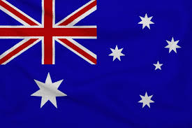

Introduction :

The Australia Cricket Team represents Australia in international cricket. It is managed by Cricket Australia. Australia is one of the strongest and most successful teams in the history of world cricket.
Australia played its first Test match in 1877 against England. The famous rivalry between Australia and England is called The Ashes.
Formats of Cricket Played by Australia
The Australia cricket team plays cricket in three main formats:
1. Test Cricket
- Longest format of cricket
- Played for 5 days
- Each team plays two innings
- Players wear white clothes
- Played with a red ball
2. One Day International (ODI)
- Match of 50 overs per team
- Played in one day
- Players wear colored jerseys
- Played with a white ball
3. Twenty20 International (T20I)
- Shortest format of cricket
- 20 overs per team
- Very fast and entertaining
- Played mostly at night under lights
Information:
- 🏆 ICC Cricket World Cup: 1987, 1999, 2003, 2007, 2015, 2023
- 🏆 ICC T20 World Cup: 2021
- 🏏 Strong Ashes rivalry with England
Strong team in all formats